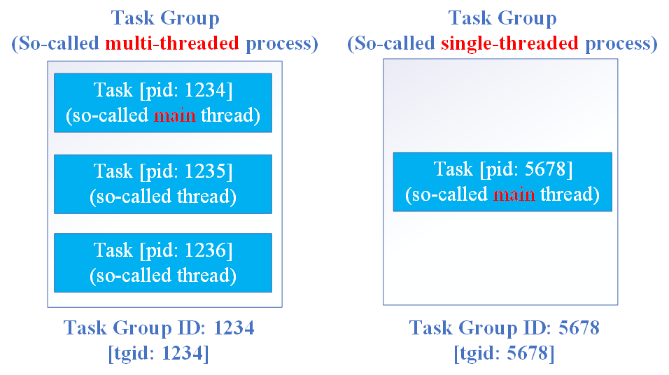
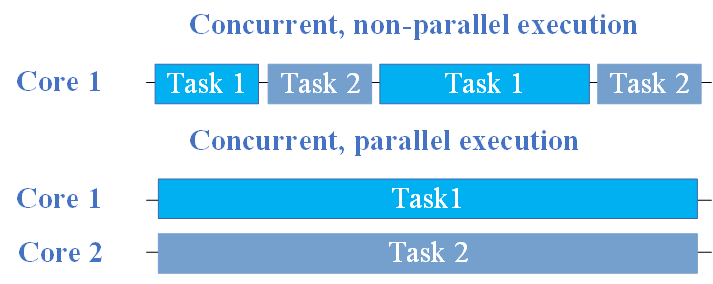

A Basic Tour about Computer Systems
Character Encoding
ASCII
ASCII, abbreviated from American Standard Code for Information Interchange, is a character encoding standard, which is mainly focused on English characters. This encoding method cannot represent some special characters, such as the Chinese character “乐”, and the thinking face emotion “🤔”.
At present, ASCII includes 128 characters, which are encoded from 0x00 to 0x7F. If a C source file does not contain any special characters mentioned above, the content is as same as the ASCII, because many subsequent character encoding methods are compatible with ASCII. Take hello.c for example.
#include <stdio.h>
int main() {
printf("Hello, world!");
return 0;
}
In Linux, we can use the command hexdump to check the content of a file.
$>hexdump -C hello.c
00000000 23 69 6e 63 6c 75 64 65 20 3c 73 74 64 69 6f 2e |#include <stdio.|
00000010 68 3e 0a 0a 69 6e 74 20 6d 61 69 6e 28 29 20 7b |h>..int main() {|
00000020 0a 20 20 70 72 69 6e 74 66 28 22 48 65 6c 6c 6f |. printf("Hello|
00000030 2c 20 77 6f 72 6c 64 21 22 29 3b 0a 20 20 72 65 |, world!");. re|
00000040 74 75 72 6e 20 30 3b 0a 7d 0a |turn 0;.}.|
0000004a
Unicode
Actually, Linux normally do not use ASCII as its character encoding method, and you can use the command locale to check this.
$>locale
LANG=en_US.UTF-8
LANGUAGE=
LC_CTYPE="en_US.UTF-8"
LC_NUMERIC=zh_CN.UTF-8
LC_TIME=zh_CN.UTF-8
LC_COLLATE="en_US.UTF-8"
LC_MONETARY=zh_CN.UTF-8
LC_MESSAGES="en_US.UTF-8"
LC_PAPER=zh_CN.UTF-8
LC_NAME=zh_CN.UTF-8
LC_ADDRESS=zh_CN.UTF-8
LC_TELEPHONE=zh_CN.UTF-8
LC_MEASUREMENT=zh_CN.UTF-8
LC_IDENTIFICATION=zh_CN.UTF-8
LC_ALL=
We can find that the character encoding method of my system is UTF-8. But before we enter into UTF-8, let us go through what Unicode is first. Unicode, formally The Unicode Standard, is a standard that includes almost all characters around the world, such as Chinese, Japanese and Arabic characters. The range of this standard is from 0x00 to 0x10FFFF and covers more than one million different characters. Obviously, this representation needs one byte, two bytes or three bytes to store a certain character. If all characters are represented by three bytes, then for those characters that can be represented by one byte, the other two bytes are meaningless, which is a huge waste for storage. For example, all English characters can be represented by one byte like ASCII, we do not hope to use three bytes to store them. To satisfy various requirements, therefore, there are various storage methods for Unicode, the common ones are UTF-8, UTF-16, as well as UTF-32, and they use different binary formats to represent Unicode characters respectively.
UTF-8
UTF-8 is a variable-width character encoding standard, defined as the encoding of a certain character into one to four bytes.
The encoding rule of UTF-8:
- For one byte encoding, the most significant bit(MSB) is always zero, and resting seven bits cover whole characters of ASCII.
- For encoding more than one byte, such as n bytes, the first n bits of n bytes is one and the (n+1)th is zero. And for subsequent bytes, the first 2 bits are all set as one and zero, respectively.
| Unicode range | UTF-8 mapping |
|---|---|
| 0x000000 - 0x00007F | 0b0####### (ASCII) |
| 0x000080 - 0x0007FF | 0b110##### 10###### |
| 0x000800 - 0x00FFFF | 0b1110#### 10###### 10###### |
| 0x010000 - 0x10FFFF | 0b11110### 10###### 10###### 10###### |
Now let us try to convert a Unicode representation to the binary form. Take emoji “🤔” for example, and it is represented as U+1F914 in Unicode.
$$1F914_{16} = (000\ 011111\ 100100\ 010100)_2$$
Therefore, the result is $(\underline{11110}000\ \underline{10}011111\ \underline{10}100100\ \underline{10}010100)_2$. In the UTF-8 standard, “🤔” is stored by four bytes.
If you store this emoji in a file named x and use the command hexdump, you can get:
$>hexdump -C x
00000000 f0 9f a4 94 0a |.....|
00000005
$$F09FA494_{16} = (11110000\ 10011111\ 10100100\ 10010100)_2$$
UTF-16
UTF-16 is also a variable-width character encoding standard, defined as the encoding of a certain character into two or four bytes.
The encoding rule of UTF-16:
-
For characters with Unicode code less than 0x10000, two bytes are used to store each of them, and there is no need to add other bits.
-
For characters with Unicode code between 0x10000 and 0x10FFFF, two bytes are used to store them, which are divided into two parts. There is an additional operation to subtract 0x10000 from the original Unicode value. For the first bytes, the first six bits are 110110, and for the fourth byte, the first six bits are 110111.
| Unicode range | UTF-16 mapping |
|---|---|
| 0x0000 0000 - 0x0000 FFFF | 0b######## ######## |
| 0x0001 0000 - 0x0010 FFFF | 0b110110## ######## 110111## ######## |
For English character ‘A’ (less than 0x10000), apparently its UTF-16 code is $(00000000\ 01000001)_2$, i.e. 0x0041.
For emoji “🤔” ($1F914_{16} > 10000_{16}$, more than 0x10000), $1F914_{16} - 10000_{16} = F914_{16}$. Its UTF-16 code is $(\underline{110110}00\ 00111110\ \underline{110111}01\ 00010100)_2$, i.e. 0xD83EDD14.
UTF-32
UTF-32 is a fixed-length encoding that always occupies four bytes, enough to accommodate all Unicode characters, so it can be stored directly in Unicode codes without any encoding conversion. Although it wastes storage, it improves efficiency.
For ‘A’, it will be stored as 0x00000041, and for ‘🤔’, it will be stored as 0x0001F914.
GBK, Big5, etc.
They are historical legacies. Before Unicode, there were different encodings for encoding characters in computers all over the world, especially in East Asia, such as GB2312 in mainland China, which was later expanded to GBK, Big5 in Taiwan, and SHIFT-JIS in Japan. It is compatible with ASCII, and it maintains the code of the original string program (all char arrays), and it is self-synchronizing, so it quickly became popular and became the choice of string encoding for those who want to be cross-platform and support multiple languages.
Compilation System
We will use main.c as an example to explore the process of compilation.
#define a 1
#define b 3
int main(void) {
int c = a + b;
return c;
}
Preprocess
Preprocess mainly modifies the original program according to directives that begin with “#”, such as #define and #include<stdio.h>. We use the command cpp to preprocess this file and get this:
# 1 "main.c"
# 1 "<built-in>"
# 1 "<command-line>"
# 31 "<command-line>"
# 1 "/usr/include/stdc-predef.h" 1 3 4
# 32 "<command-line>" 2
# 1 "main.c"
int main(void) {
int c = 1 + 3;
return c;
}
There are some new output at the top of the file, which is much like a “debugging” or “logging”, (or even “storytelling”) session of what the preprocessor is doing and how. It will basically tell you through on how it is expanding the macros found. Source file name and line number information is conveyed by lines of the form:
# linenum filename [flags]
...(Another linemarker)
They are called linemarkers, inserted as needed into the output (but never within a string or character constant). This means that the following line (..., a certain linemarker) originated at line number linenum in file filename. The optional flags are:
| Flags | Meanings |
|---|---|
| 1 | This indicates the start of a new file. |
| 2 | This indicates returning to a file (after having included another file). |
| 3 | This indicates that the following text comes from a system header file, so certain warnings should be suppressed. |
| 4 | This indicates that the following text should be treated as being wrapped in an implicit extern “C” block. |
<built-in> and <command-line> are not real files. They are non-file sources of preprocessor tokens that need to be represented somehow in the output format, so they are treated as if they were files. Call them pseudo-files.
<built-in>is the pseudo-file that contains the compiler’s built-in macro definitions, like__LINE__,__FILE__and__DATE__.<command-line>is from the preprocessor (usually GCC) command line, considered as a source of macro definitions (and possibly un-definitions), such as the commandgcc ... -DFOO=1 -UBAR ...and so on.
All in all, the meaning of these directive are as follow:
| Directives | Meanings |
|---|---|
| # 1 “main.c” | The following line is at line 1 of main.c, with no other flags. So, it means to start to read line 1 of main.c. |
| # 1 “<built-in>” | Read a built-in C pre-processor directive. This line, therefore, sets a standard predefined macro, like _LINUX_ or __cplusplus. |
| # 1 “<command-line>” | Read a command-line option, and one of those is set by the -D flag, like -DTEST=0, or even command-line undefinitions, like -UTEST. |
| # 31 “<command-line>” | At line 31 in the fictious file, read another macro coming from the command line. (Note these are set in the order they are found) |
| # 1 “/usr/include/stdc-predef.h” 1 3 4 | Read the pre-defined macros file, located at /usr/include/stdc-predef.h assuring that this header will be included like a system file header and that the symbols it contains are treated as C symbols. |
| # 32 “<command-line>” 2 | Resume and finish reading the <command-line> pseudo-file. |
| # 1 “main.c” | Resume reading main.c. |
Actually, these output directives are not dispensable for compiling. Their purposes are:
- If the compiler encounters an error, it uses the most recent line number directive to determine what file and line to reference in the error message. (The
#linedirective can even be used in generated code to allow error messages to point directly to the original source file, rather than to an intermediate C source file.) - If debugging information (
-g) is turned on, line number data is included in debug sections of the generated object file.
Neither of these purposes is critical, so you would be free to delete these directives before compiling. The really “useful” part is as follow:
int main(void) {
int c = 1 + 3;
return c;
}
Compiling
This step translate C language into assembly. We can use the command gcc -S main.i -o main.s to get compiling result:
.file "main.c"
.text
.globl main
.type main, @function
main:
.LFB0:
.cfi_startproc
endbr64
pushq %rbp
.cfi_def_cfa_offset 16
.cfi_offset 6, -16
movq %rsp, %rbp
.cfi_def_cfa_register 6
movl $4, -4(%rbp)
movl -4(%rbp), %eax
popq %rbp
.cfi_def_cfa 7, 8
ret
.cfi_endproc
.LFE0:
.size main, .-main
.ident "GCC: (Ubuntu 9.4.0-1ubuntu1~20.04.1) 9.4.0"
.section .note.GNU-stack,"",@progbits
.section .note.gnu.property,"a"
.align 8
.long 1f - 0f
.long 4f - 1f
.long 5
0:
.string "GNU"
1:
.align 8
.long 0xc0000002
.long 3f - 2f
2:
.long 0x3
3:
.align 8
4:
Assembling
We can use the command gcc -c main.s -o main.o to get a relocatable object program, the content of which is gibberish.
The part of the file is as follow:
$>hexdump -C main.o
00000000 7f 45 4c 46 02 01 01 00 00 00 00 00 00 00 00 00 |.ELF............|
00000010 01 00 3e 00 01 00 00 00 00 00 00 00 00 00 00 00 |..>.............|
00000020 00 00 00 00 00 00 00 00 58 02 00 00 00 00 00 00 |........X.......|
00000030 00 00 00 00 40 00 00 00 00 00 40 00 0c 00 0b 00 |....@.....@.....|
00000040 f3 0f 1e fa 55 48 89 e5 c7 45 fc 04 00 00 00 8b |....UH...E......|
00000050 45 fc 5d c3 00 47 43 43 3a 20 28 55 62 75 6e 74 |E.]..GCC: (Ubunt|
00000060 75 20 39 2e 34 2e 30 2d 31 75 62 75 6e 74 75 31 |u 9.4.0-1ubuntu1|
00000070 7e 32 30 2e 30 34 2e 31 29 20 39 2e 34 2e 30 00 |~20.04.1) 9.4.0.|
00000080 04 00 00 00 10 00 00 00 05 00 00 00 47 4e 55 00 |............GNU.|
00000090 02 00 00 c0 04 00 00 00 03 00 00 00 00 00 00 00 |................|
...(Omit many bytes)
In this way, main.s will be translated into machine language instructions, and packaged in a new form. Actually, this file is an Executable and Linkable Format(ELF), and we can use the command readelf -h main.o to read its head.
$>readelf -h main.o
ELF Header:
Magic: 7f 45 4c 46 02 01 01 00 00 00 00 00 00 00 00 00
Class: ELF64
Data: 2's complement, little endian
Version: 1 (current)
OS/ABI: UNIX - System V
ABI Version: 0
Type: REL (Relocatable file)
Machine: Advanced Micro Devices X86-64
Version: 0x1
Entry point address: 0x0
Start of program headers: 0 (bytes into file)
Start of section headers: 600 (bytes into file)
Flags: 0x0
Size of this header: 64 (bytes)
Size of program headers: 0 (bytes)
Number of program headers: 0
Size of section headers: 64 (bytes)
Number of section headers: 12
Section header string table index: 11
Linking
We can use gcc main.c -o main to merge other precompiled object file, like printf.o and scanf.o, and get a final executable file. The command size can reflect differences.
$>size main.o
text data bss dec hex filename
108 0 0 108 6c main.o
$>size main
text data bss dec hex filename
1418 544 8 1970 7b2 main
- Text segment: the size of the codes.
- Data segment: the size of the data segment containing static variables and global variables that have been initialized.
- Bss segment: Block Started by Symbol (BSS) holds the size of bytes of uninitialized global variables in the program, bbs segment belongs to static memory allocation.
And we also can use ldd to prints the shared objects (shared libraries) required by a program.
$>ldd main
linux-vdso.so.1 (0x00007ffededa7000)
libc.so.6 => /lib/x86_64-linux-gnu/libc.so.6 (0x00007fc5988b9000)
/lib64/ld-linux-x86-64.so.2 (0x00007fc598ac6000)
Process and Thread
Concepts (users' view)
Process
A process is an instance of a program in execution. It is an independent unit of the system for resource allocation and scheduling, focusing on system scheduling and individual units, i.e. a process is a section of a program that can run independently.
Thread
A thread is a basic unit of CPU utilization; it comprise a thread id, a program counter, a register set and a stack. It shares with other threads belonging to the same process its code section, data section and other operating-system resources, such as open files and signals. Thread is also called light-weight process (LWP). A traditional process has a single thread of control. If a process has multiple threads of control, it can perform more than one task at a time.
Differences
In a process there may be many threads, and their differences are as follow:
One way of looking at a process is that it is a way to group related resources together. A process has an address space containing program text and data, as well as other resources. These resource may include open files, child processes, pending alarms, signal handlers, accounting information, and more. By putting them together in the form of a process, they can be managed more easily. The other concept a process has is a thread of execution, usually shortened to just thread. The thread has a program counter that keeps track of which instruction to execute next. It has registers, which hold its current working variables. It has a stack, which contains the execution history, with one frame for each procedure called but not yet returned from. Although a thread must execute in some process, the thread and its process are different concepts and can be treated separately. Processes are used to group resources together; threads are the entities scheduled for execution on the CPU.
| Per process items | Per thread items |
|---|---|
| Address space | Program counter |
| Global variables | Registers |
| File descriptor (open files) | Stack |
| Child processes | State |
| Pending alarms | |
| Signals and signal handlers | |
| Accounting information |
Implementation in Linux (kernal’s view)
The concepts mentioned above may be extremely confusing. Let us go through their implementation in Linux briefly.
Actually, it is boring and meaningless to distinguish them. In Linux, everything is simply a runnable task. There is a C structure named task_struct, to describe the so-called process and thread. There are two key values in this structure —— pid (process ID) and tgid (task group ID), and we denote them as struct_pid and struct_tgid for ease of description, respectively. In Linux, each process has a distinct struct_tgid value and each thread has a distinct struct_pid value, so to some extent in Linux there is no special implementation for threads. Threads are treated as single-threaded processes (or namely tasks) while processes are treated as groups of single-threaded processes (or namely task groups). More briefly, threads are tasks and processes are groups of tasks. More interestingly, when you call the function getpid(), it returns struct_tgid rather than struct_pid. The following illustration may be helpful for understanding this:

There was an email Re: proc fs and shared pids from Linus that may be an excellent interpretation about differences between thread and process in Linux.
Concurrency and Parallelism
Generally speaking, concurrency is generally mentioned more in the context of programming while parallelism is mentioned more in the context of hardware. Concurrency is about dealing with lots of things at once. Parallelism is about doing lots of things at once. The following figure may help you understand it.

Reference
- [1] Unicode、UTF-8、UTF-16，終於懂了
- [3] Linux Process vs. Thread | Baeldung on Linux
- [3] 【Linux操作系统】番外篇 5 进程内存空间
- [4] Re: proc fs and shared pids
- [6] C preprocessor default additions
- [7] 9 Preprocessor Output
- [8] Are line-markers in C preprocessor output used by compiler?
- [9] what resources are shared and what are created during new process and new thread creation in linux?